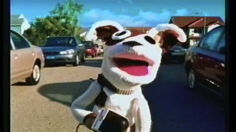

Pets.com
A sock puppet, a Super Bowl ad, and nine months from IPO to liquidation.

In 1998, a startup was founded on the theory that America would buy bags of kibble by courier. It was called Pets.com, an online pet-supplies store, and for two giddy years it was the dot-com era in miniature: a plain business (pet food, shipped), wrapped in a grand story (the internet will sell everything), priced accordingly. [S1]
The mascot did the rest. A sock puppet -- a chatty, likable sock puppet -- became the company's face, and in January 2000 it starred in a Super Bowl advertisement, the most expensive seconds in television, spent by a company selling dog food at a loss. [S1]
The next month, February 2000, Pets.com went public at the top of the dot-com wave. Nine months later, in November 2000, it announced its liquidation. From ringing the bell to locking the doors: most of a year. The timeline is the whole case study -- one of the fastest dissolutions of the era -- and a shorthand in business writing for dot-com excess ever since. [S1]
Look at what the money actually bought. Shipping pet food -- heavy, cheap goods -- to individual homes, by courier. The story was scale: get big enough and the economics of delivering kibble would somehow invert. Physics, as it happens, does not respond to funding rounds; the arithmetic of trucking forty-pound bags one at a time stayed exactly what it had always been. [S1]
The era's judgement was merciless and quick, but the people involved were left holding something heavier than mockery. Eight years later, the company's CEO gave a talk -- "The Five Big Mistakes That Changed My Life and How I Moved Past Them" -- and when it reached Hacker News in 2008, the thread had an unexpectedly humane tone: founders swapping failure stories like veterans comparing scars. [S2] The internet that had laughed at Pets.com in 2000 had, by 2008, developed the first draft of the startup-failure genre -- and Pets.com, the old punchline, turned out to be chapter one.
That is the strange afterlife. The company died in 2000; the cautionary tale never did. Business writers still reach for Pets.com when a venture-backed story outruns its arithmetic, because it had every element in pure form: beloved brand, famous ad, public listing, nine months, gone. It is less a company in memory than a unit of measurement -- one Pets.com of excess.
And the puppet is what memory kept. The company's business arithmetic is a footnote now; the sock puppet is the part people still recognize, decades after the thing it advertised stopped existing. There is something almost too neat in that: the mascot was built to be remembered, and the company was not built to last. [S1]
In 1998 someone bet that the internet could sell pet food better than a store could. The bet was not insane; the timing and the courier bills were. The puppet waved, the bell rang, and eleven months of public life later the whole thing was a line in a textbook.
Remembered: the sock puppet that starred in a Super Bowl ad for a company with nine months to live.
Sources
- S1: Wikipedia: Pets.com -- https://en.wikipedia.org/wiki/Pets.com
- S2: Hacker News (2008-07-31, 90 points) -- https://news.ycombinator.com/item?id=263443
PROVENANCE
| Exhibit no.: | 015 |
| Data-source mode: | facts: seed-corpus; wikipedia-unreachable; wayback-cdx-unreachable; hn-algolia (live, subject query) |
| Illustration: | sourced image -- Bing image search, retrieved 2026-08-29 |
| Found via: | bing-image-search |
| Image url: | https://ts1.mm.bing.net/th?id=OIP.fh1Sn7BA2G-s3ifhY_T39wHaEK&pid=15.1 |
| Generated: | 2026-08-29 |
| Generator: | deadweb-pipeline 0.1 (deterministic scaffold) |
| Editorial pass: | web-product-engineer (editorial pass 2) |
| Status: | published |
| Source page: | https://www.superbowl-ads.com/2000-pets-com-sock-puppet/ |
SOURCES
- Wikipedia: Pets.com -- https://en.wikipedia.org/wiki/Pets.com
- Hacker News thread: "Pets.com CEO: The Five Big Mistakes That Changed My Life and How I Moved Past Them" (2008-07-31) -- https://news.ycombinator.com/item?id=263443